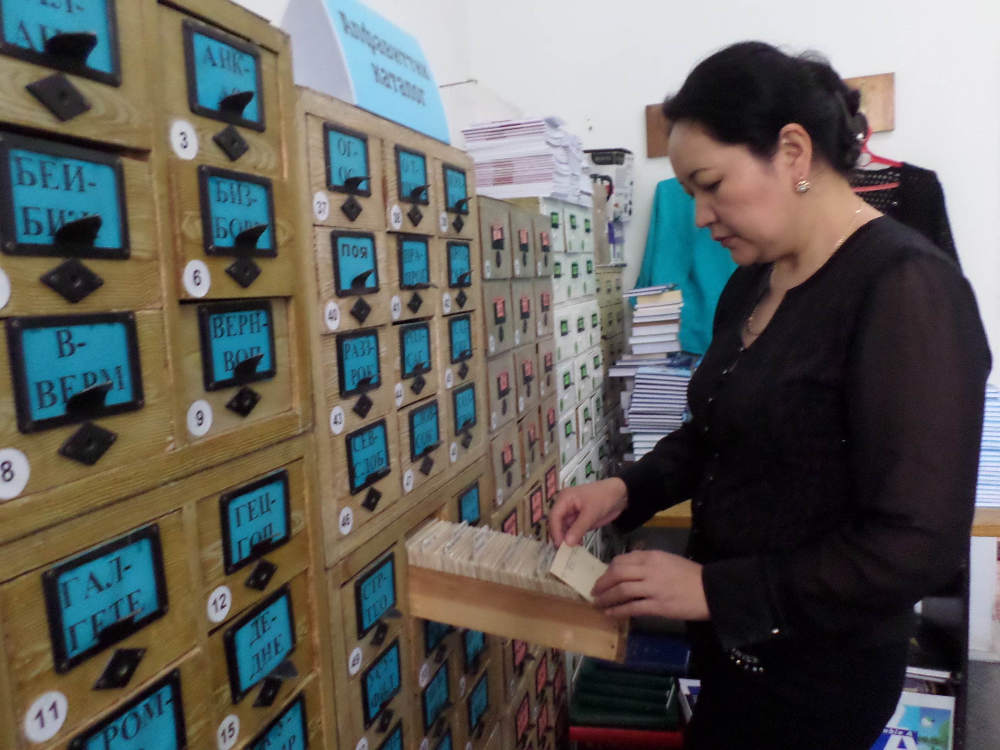
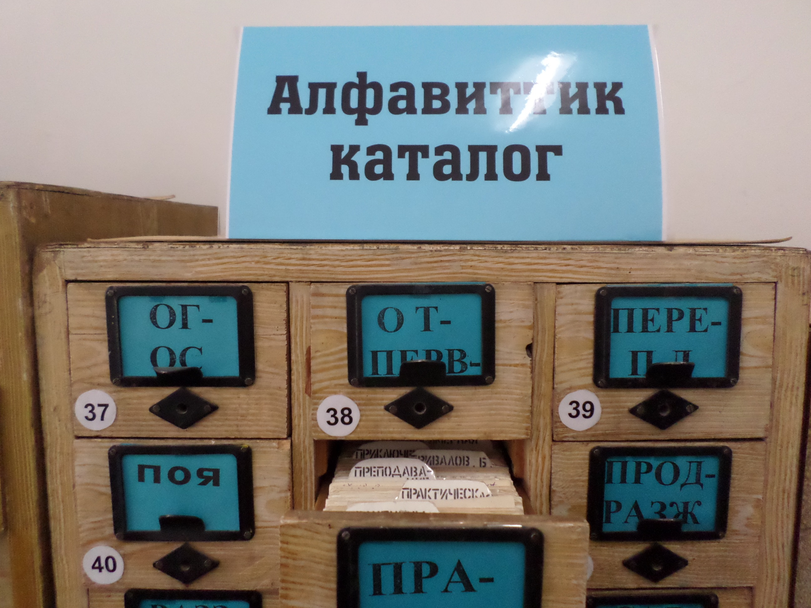
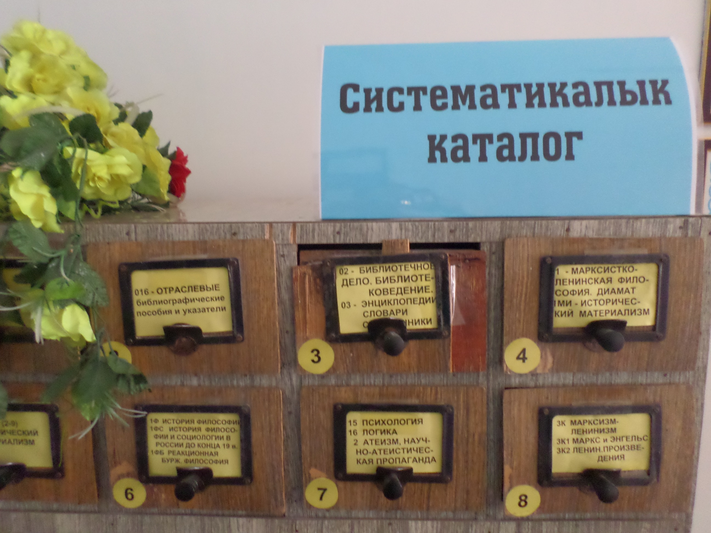
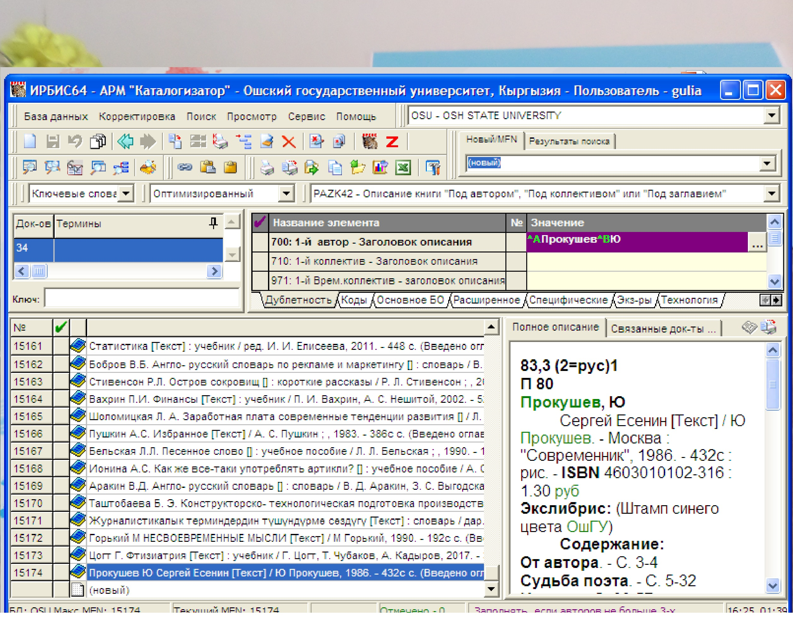
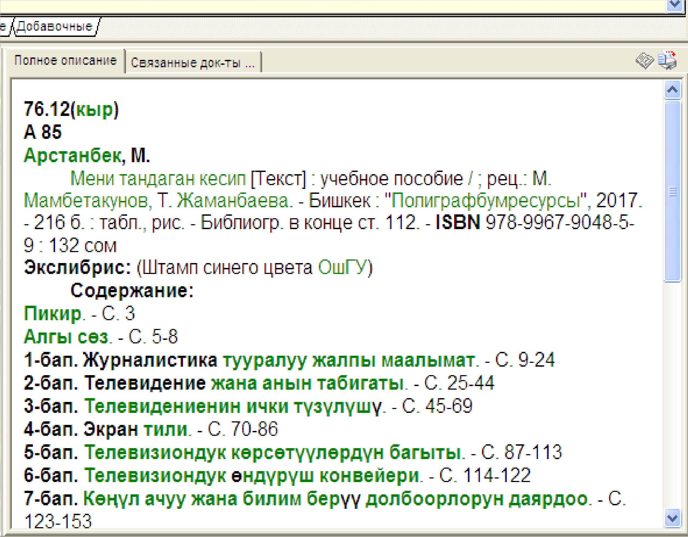

{% extends 'index.html' %}
{% load static %}
{% load i18n %}

{% block content %}

{% include 'navbar.html' %}

<body class="editor_false  lang_ru     not_ie">

    <div id="wrapper" style="padding-top: 88px;">

        <div class="readers">
            <div class="structure_container">
                <h1 class="structure_title" style="color: #2c2c2c;">Каталог</h1>
                <div class="readers_content">
                    <div class="readers_box">
                        <div style="width: 100%;" id="carouselExampleIndicators1" class="carousel slide" data-ride="carousel">
                            <ol class="carousel-indicators">
                                <li data-target="#carouselExampleIndicators1" data-slide-to="0" class="active"></li>
                                <li data-target="#carouselExampleIndicators1" data-slide-to="1"></li>
                                <li data-target="#carouselExampleIndicators1" data-slide-to="2"></li>
                            </ol>
                            <div class="carousel-inner">
                                <div class="carousel-item active">
                                    
                                </div>
                                <div class="carousel-item">
                                    
                                </div>
                                <div class="carousel-item">
                                    
                                </div>
                            </div>
                            <a class="carousel-control-prev" href="#carouselExampleIndicators1" role="button" data-slide="prev">
                                <span class="carousel-control-prev-icon" aria-hidden="true"></span>
                                <span class="sr-only">Previous</span>
                            </a>
                            <a class="carousel-control-next" href="#carouselExampleIndicators1" role="button" data-slide="next">
                                <span class="carousel-control-next-icon" aria-hidden="true"></span>
                                <span class="sr-only">Next</span>
                            </a>
                        </div>
                        
                    </div>
                    {% for i in b_catalog %}
                    <div class="readers_text">
                        <h1 style="color: #2c2c2c;font-size: 26px;">{{i.title}}</h1>
                        <p style="text-align: justify;">{{ i.text|linebreaksbr }}</p>
                    </div>
                    {% endfor %}
                </div>

                <div class="readers_content">
                    <div class="readers_box">
                        <div style="width: 100%;" id="carouselExampleIndicators2" class="carousel slide" data-ride="carousel">
                            <ol class="carousel-indicators">
                                <li data-target="#carouselExampleIndicators2" data-slide-to="0" class="active"></li>
                                <li data-target="#carouselExampleIndicators2" data-slide-to="1"></li>
                                <li data-target="#carouselExampleIndicators2" data-slide-to="2"></li>
                            </ol>
                            <div class="carousel-inner">
                                <div class="carousel-item active">
                                    
                                </div>
                                <div class="carousel-item">
                                    
                                </div>
                                <div class="carousel-item">
                                    
                                </div>
                            </div>
                            <a class="carousel-control-prev" href="#carouselExampleIndicators2" role="button" data-slide="prev">
                                <span class="carousel-control-prev-icon" aria-hidden="true"></span>
                                <span class="sr-only">Previous</span>
                            </a>
                            <a class="carousel-control-next" href="#carouselExampleIndicators2" role="button" data-slide="next">
                                <span class="carousel-control-next-icon" aria-hidden="true"></span>
                                <span class="sr-only">Next</span>
                            </a>
                        </div>
                        
                    </div>

                    {% for i in el_catalog %}
                    <div class="readers_text">
                        <h1 style="color: #2c2c2c; font-size: 26px;">{{i.title}}</h1>
                        <p>{{i.text|linebreaksbr}}</p>
                    </div>
                    {% endfor %}

                </div>
                <h1 style="font-size: 26px; color: #2c2c2c;" >{% trans 'Систематические каталоги' %}</h1>
		<div class="catalog_box">
			<ul class="catalog_link">
				<li><a target="_blank" href=https://base.oshsu.kg/resurs/document/PDF-20180419151514-kitep_osu.pdf>Текущий библиографический указатель 2014 года II квартал</a></li>
				<li><a target="_blank" href=https://base.oshsu.kg/resurs/document/PDF-20180419151215-kitep_osu.pdf>Текущий библиографический указатель 2014 года III квартал</a></li>
				<li><a target="_blank" href=https://base.oshsu.kg/resurs/document/PDF-20180419143207-kitep_osu.pdf>Текущий библиографический указатель 2014  года IV квартал</a></li>
				<li><a target="_blank" href=https://base.oshsu.kg/resurs/document/PDF-20180419134615-kitep_osu.pdf>Текущий библиографический указатель 2015 года II-III квартал</a></li>
				<li><a target="_blank" href=https://base.oshsu.kg/resurs/document/PDF-20180419152146-kitep_osu.pdf>Текущий библиографический указатель 2016 года I квартал</a></li>
				<li><a target="_blank" href=https://base.oshsu.kg/resurs/document/PDF-20180419152547-kitep_osu.pdf>Текущий библиографический указатель 2016 года II квартал</a></li>
				<li><a target="_blank" href=https://base.oshsu.kg/resurs/document/PDF-20180419152827-kitep_osu.pdf>Текущий библиографический указатель 2016 года III квартал</a></li>
				<li><a target="_blank" href=https://base.oshsu.kg/resurs/document/PDF-20180419152954-kitep_osu.pdf>Текущий библиографический указатель 2016 года IV квартал</a></li>
				<li><a target="_blank" href=https://base.oshsu.kg/resurs/document/PDF-20180419153241-kitep_osu.pdf>Текущий библиографический указатель 2017 года I квартал</a></li>
				<li><a target="_blank" href=https://base.oshsu.kg/resurs/document/PDF-20180419153535-kitep_osu.pdf>Текущий библиографический указатель 2017 года II квартал</a></li>
				<li><a target="_blank" href=https://base.oshsu.kg/resurs/document/PDF-20180419153718-kitep_osu.pdf>Текущий библиографический указатель 2017 года III - IV квартал</a></li>
				<li><a target="_blank" href=https://base.oshsu.kg/resurs/document/PDF-20180523104814-kitep_osu.pdf>Текущий библиографический указатель 2018 года I квартал</a></li>
				<li><a target="_blank" href=https://base.oshsu.kg/resurs/document/PDF-20180717113523-kitep_osu.pdf>Текущий библиографический указатель 2018 года II квартал</a></li>
				<li><a target="_blank" href=https://base.oshsu.kg/resurs/document/PDF-20181029154125-kitep_osu.pdf>Текущий библиографический указатель 2018 года III квартал</a></li>
				<li><a target="_blank" href=https://base.oshsu.kg/resurs/document/PDF-20190121132411-kitep_osu.pdf>Текущий библиографический указатель 2018 года IV квартал</a></li>
				<li><a target="_blank" href=https://base.oshsu.kg/resurs/document/PDF-20190408085021-kitep_osu.pdf>Текущий библиографический указатель 2019 года I квартал</a></li>
				<li><a target="_blank" href=https://base.oshsu.kg/resurs/document/PDF-20190719123821-kitep_osu.pdf>Текущий библиографический указатель 2019 года II квартал</a></li>
				<li><a target="_blank" href=https://base.oshsu.kg/resurs/document/PDF-20191004083952-kitep_osu.pdf>Текущий библиографический указатель 2019 года III квартал</a></li>
				<li><a target="_blank" href=https://base.oshsu.kg/resurs/document/PDF-20200701142510-kitep_osu.pdf>Текущий библиографический указатель 2019 года IV квартал</a></li>
				<li><a target="_blank" href=https://base.oshsu.kg/resurs/document/PDF-20201215101919-Kitep_osu.pdf>Текущий библиографический указатель 2020 года I квартал</a></li>
				<li><a target="_blank" href=https://base.oshsu.kg/resurs/document/PDF-20201215102339-Kitep_osu.pdf>Текущий библиографический указатель 2020 года III квартал</a></li>
				<li><a target="_blank" href=https://base.oshsu.kg/resurs/document/PDF-20210316101154-Kitep_osu.pdf>Текущий библиографический указатель 2020 года IV квартал</a></li>
				<li><a target="_blank" href=https://base.oshsu.kg/resurs/document/XLSX-20201214141515-Kitep_osu.xlsx>Образец заполнения заявки на приобретение учебной литературы</a></li>
			</ul>
		</div>
            </div>
        </div>

    </div>

</body>
{% include 'footer.html' %}
{% endblock content %}